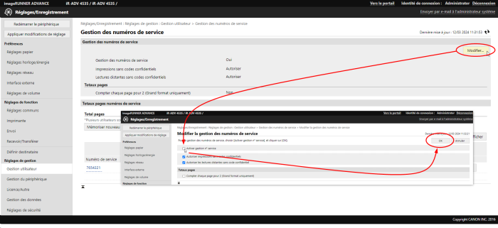
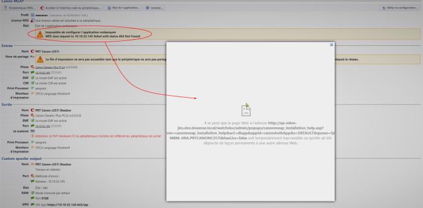
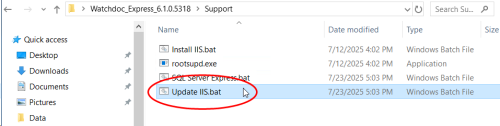
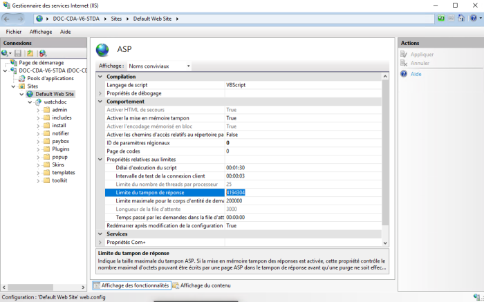
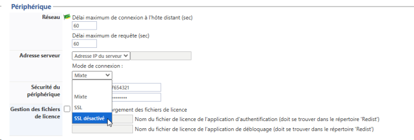
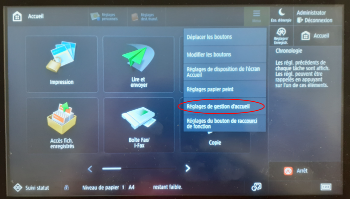
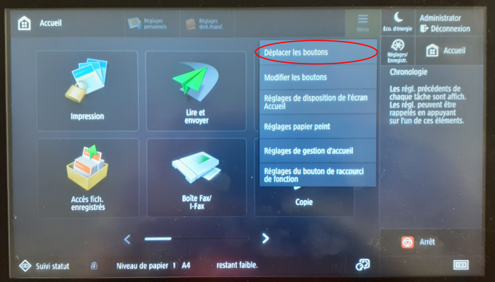

WES Canon - Dépanner le WES
Règles générales pour le dépannage
Afin de permettre à l'équipe Support Doxense® d'établir un diagnostic de panne rapide et fiable, merci de communiquer le maximum d'informations possible lors de la déclaration de l'incident :
-
Quoi ? Quelle est la procédure à suivre pour reproduire l'incident ?
-
Quand ? A quelle date et à quelle heure a eu lieu l'incident ?
-
Où ? Sur quel périphérique et depuis quel poste de travail a eu lieu l'incident ?
-
Qui ? Avec quel compte utilisateur s'est produit l'incident ?
-
Fichier trace Watchdoc.log : merci de joindre le fichier de trace Watchdoc.
-
Fichier de traces WES : merci d'activer les fichiers de trace sur chaque file pour laquelle vous avez constaté un incident.
Une fois ces informations rassemblées, vous pouvez envoyer une demande de résolution depuis le portail Connect, outil de gestion des incidents dédié aux partenaires.
Pour obtenir un relevé optimal des données nécessaires au diagnostic, utilisez l'outil Watchdoc DiagTool fourni avec le programme d'installation de Watchdoc (cf. Créer un rapport de logs avec DiagTool).
Activer les traces du WES (WEStraces)
Pour effectuer un diagnostic du problème rencontré sur les applications embarquées, il convient d'activer les fichiers traces (logs) spécifiques aux communications du WES.
Pour activer les traces :
-
dans l'interface d'administration web de Watchdoc, depuis le Menu Principal, cliquez sur Files d'impression ;
-
dans la liste des files, cliquez sur la file dotée du WES pour lequel vous souhaitez activer les fichiers traces ;
-
dans l'interface de gestion de la file, cliquez sur le bouton Propriétés ;
-
dans la rubrique [Nom_du_WES], cliquez sur le bouton Editer la configuration :

-
dans la section WES > Diagnostic, cochez la case Activer les traces ;
-
dans la liste Niveau de traces, sélectionnez :
-
Auto : conserve les traces standard ;
- Inclure les contenus binaires : conserve les traces détaillées.
-
- dans le champ Chemin, indiquez le chemin du dossier dans lequel doivent être enregistrés les fichiers de trace. Si vous laissez le champ vide, les fichiers trace seront enregistrés par défaut dans le dossier d'installation Watchdoc_install_dir/Logs/Wes_Traces/QueueId :


Travaux de numérisation, fax et photocopie non comptabilisés
Si les travaux de numérisation, fax et photocopie ne sont pas comptabilisés par Watchdoc, vérifiez que l'adresse (nom d'hôte ou IP) du serveur Watchdoc configurée dans le périphérique est correcte :
-
dans l'interface de configuration de la file, dans la section WES, cliquez sur le bouton Etat de l'application (affiché lorsque le WES est correctement installé) ;
-
cliquez sur le bouton Télécharger afin de télécharger les fichiers de logs et de configuration du WES ;
-
si la configuration de l'adresse et/ou des ports n'est pas correcte, cliquez sur le bouton Configurer de l'interface de configuration de la file ;
-
vérifiez que la procédure a réglé le problème.
Scan vers dossier (ScanToFolder) ne fonctionne pas
Contexte
ScanToFolder est disponible avec le WES Canon depuis Watchoc v6. Cependant, il arrive que cela ne fonctionne pas après installation du WES.
Cause
Ce message est lié à des options du périphérique qu'il convient de changer.
Résolution
Rendez-vous dans l'interface d'administration du périphérique Canon.
Dans les options du périphérique, rendez-vous sur Function settings > Send > Common settings > Personal folder specification method :
-
sélectionnez User login server
-
désélectionnez Use authentication info for each user.
Une erreur inattendue est survenue
Contexte
Lors de l'authentification par badge et/ou login, quel que soit l'utilisateur, un bip retentit et le message "une erreur inattendue...." s'affiche (problème survenu sur le modèle ir-ADV Canon 5500).
Cause
Le problème est lié à l'activation de la gestion des numéros de service sur le périphérique.
Résolution
Le problème doit être résolu dans l'interface de configuration du périphérique Canon :
-
à l'aide d'un navigateur web, rendez-vous dans l'interface d'administration du périphérique d'impression ;
-
dans le menu, cliquez sur Réglages/ enregistrements > Réglages de gestion > Gestion utilisateur > Gestion des numéros de service.
-
dans l'interface Modifier la gestion des numéros de service, décochez la case Activer gestion n° service ;
-
cliquez sur OK pour valider la désactivation :

-
Testez l'authentification sur le WES pour vérifier la résolution du problème.
Impossible de configurer l'application embarquée (WES) - Message d'erreur "il se peut que la page WEB soit temporairement inaccessible ou qu'elle ait été déplacée..."
Contexte
Lors de l'installation du WES Canon, après avoir sélectionné le fichier de l'application à configurer, un message d'erreur s'affiche : "Impossible de configurer l'application embarquée WES Java request to [IP_web] failed with status 404 Not Found".
Dans l'interface permettant de sélectionner les fichiers d'applications Canon, le message suivant s'affiche : "Il se peut que la page Web à l'adresse [url] soit temporairement inaccessible ou qu'elle ait été déplacée de façon permanente à une autre adresse Web.
Cause
Cette erreur est due à la limite de tampon de réponse du serveur Web IIS, insuffisante pour télécharger les fichiers de configuration :

Résolution
Pour résoudre ce problème, il convient d'augmenter la limite de tampon de réponse du serveur Web IIS.
Pour cela, vous pouvez procéder automatiquement en lançant un script fourni dans le package d'installation de Watchdoc ou manuellement.
Procédure automatique :
-
rendez-vous dans le package d'installation de Watchdoc, dossier Support ;
-
cliquez sur le fichier Update IIS.bat ;

-
une fois le script exécuté, la fenêtre se ferme ;
-
reprenez l'installation du WES pour vérifier que le problème est réglé.
Procédure manuelle :
Accédez au gestionnaire des services Internet (IIS) en tant qu'administrateur ;
-
dans la liste des sites, sélectionnez votre site Watchdoc concerné et cliquez-droit ;
-
sélectionnez le module des applications ASP ;
-
dans la liste des Comportements, cliquez sur Propriétés relatives aux limites ;
-
augmentez la taille de la Limite du tampon de réponse : nous préconisons d'indiquer une taille de 10 Mo (10 485 760 octets) :

-
reprenez l'installation du WES pour vérifier que le problème est réglé.
Enable sspi failed
Contexte
Lors de la configuration du WES Canon, en cliquant sur Configurer le wes sur une file d'impression, vous obtenez le message suivant :
"enable SSPI failed" et A call to SSPI failed
Cause
Ce problème peut être dû à la configuration du certificat ssl ou de la communication ssl de la machine.
Contournement
Pour contourner ce problème, il convient de modifier le Mode de connexion du WES :
-
dans le profil WES, section Périphérique, paramètre Adresse serveur, modifiez le mode de connexion :
-
sélectionnez la mention SSL désactivé :

Le bouton Mes impressions ne s'affiche pas dans la page Accueil
Contexte
Après installation du WES sur un périphérique, le bouton Mes impressions propre à Watchdoc ne s'affiche pas sur l'écran du périphérique d'impression.
Cause
Cette anomalie peut être due aux paramètres d'affichage définis pour la page d'accueil du périphérique d'impression. Il se peut que le nombre de boutons soit limité ou qu'il y ait une restriction des fonctions affichées sur l'écran d'accueil.
Résolution
Vérifiez et modifiez les paramètres de personnalisation de l'écran Accueil sur le périphérique :
-
désactivez Watchdoc (cf. étape 2 de l'installation du WES sur la file, opération 6 ) ;
-
depuis l'écran du périphérique d'impression, connectez-vous en tant qu'administrateur sur le périphérique ;
-
cliquez sur le bouton Menu du périphérique d'impression ;
-
depuis le Menu, cliquez sur l'entrée Réglages de gestion d'accueil ;

-
pour le paramètre Restreindre l'affichage des fonctions, vérifiez que Watchdoc ne figure pas parmi les fonctions restreintes ;
-
si la fonction Watchdoc est restreinte, supprimez la restriction ;
-
validez ce paramètre.
Si vous souhaitez que le bouton "Mes impressions" figure à une place précise de l'écran d'accueil :
-
cliquez sur l'entrée Déplacer les boutons ;

-
parcourez les écrans pour trouver le bouton Mes impressions ;
-
sélectionnez ce bouton en cliquant dessus ;
-
faites-le glisser vers l'écran précédent ou suivant sur lequel vous souhaitez le voir apparaître ;
-
une fois placé à l'endroit souhaité, validez la configuration (cf. la section Personnalisation de l'écran d'accueil du manuel utilisateur du périphérique d'impression).